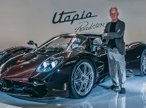
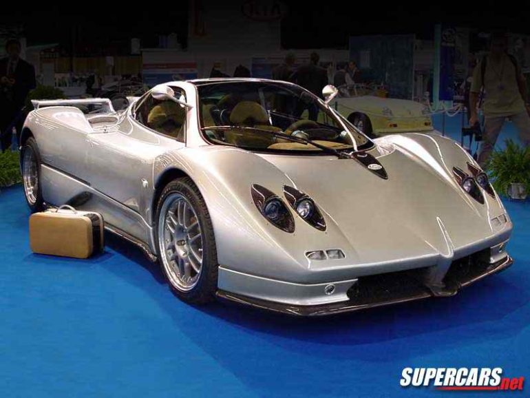
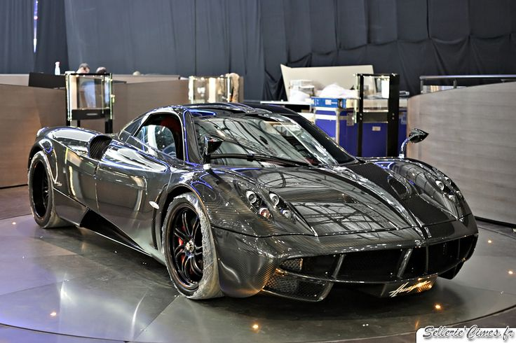

Nestled in San Cesario sul Panaro, the Pagani Atelier is where Renaissance inspiration meets modern composite materials. Every vehicle is a bespoke creation, tailored to the exact desires of its owner, reflecting a rich Italian automotive bloodline that honors both tradition and the future.
YEAR FOUNDED
HANDCRAFTED
Founded by Horacio Pagani, Pagani Automobili began with a vision of crafting the ultimate hypercar. Combining advanced materials like carbon fiber with artful design, the Zonda would become the company’s first iconic model.
The Pagani Zonda C12 debuted with a Mercedes-AMG V12 engine producing 394 hp. Its radical design and extreme performance established Pagani as a leader in bespoke hypercars, blending engineering precision with Italian artistry.
The Pagani Huayra succeeded the Zonda with twin-turbocharged V12 power producing up to 730 hp. Featuring active aerodynamics and a luxurious, handcrafted interior, it set new standards for performance and customization.
Pagani continues pushing the boundaries with the Huayra R and hybrid concepts, exploring sustainable technologies while maintaining the brand’s philosophy of extreme performance, artful design, and precision craftsmanship.
Pagani's patented composite material weaves carbon fiber with titanium wire, offering the immense yield strength of titanium and the lightweight agility of carbon.
The gear shift mechanisms are deliberately left exposed, transforming raw mechanical components into visually stunning, functional jewelry.
Premium leather, brushed aluminum, and carbon details wrap the cabin, ensuring a tactile and sensory experience that rivals fine art.

Pagani was founded in 1992 by Horacio Pagani, an Argentine engineer who dreamed of building the world's most artistic hypercars. His passion for design, engineering, and craftsmanship shaped the identity of Pagani Automobili.

In 1999, Pagani introduced the legendary Zonda, a hypercar that redefined performance and luxury. The Zonda combined extreme engineering, carbon fiber technology, and handcrafted interiors.

The Huayra continued Pagani's legacy with advanced aerodynamics and groundbreaking materials like Carbotanium. It proved that performance, technology, and art could coexist in a single machine.
"Art and Science can walk together hand in hand."— Horacio Pagani